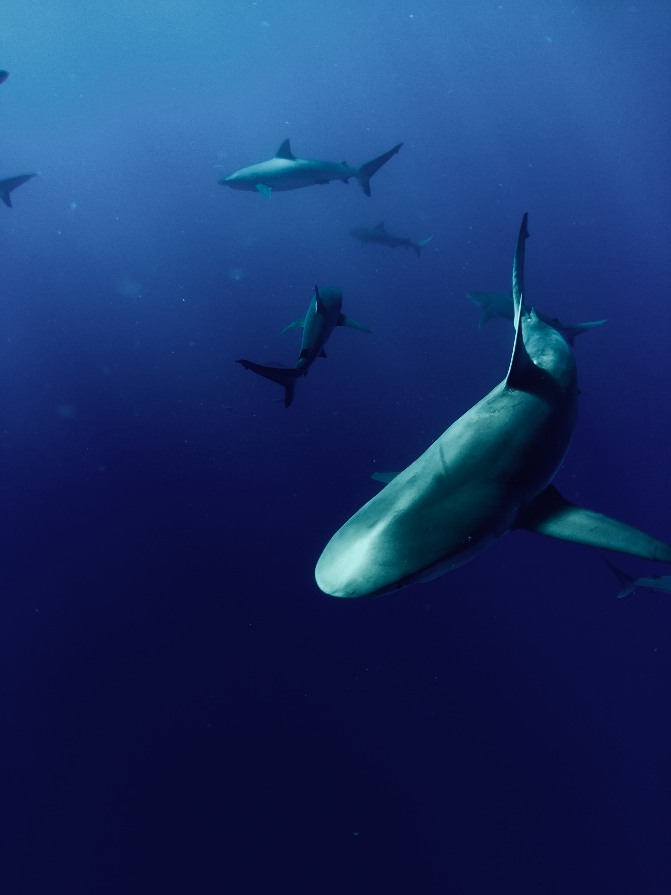
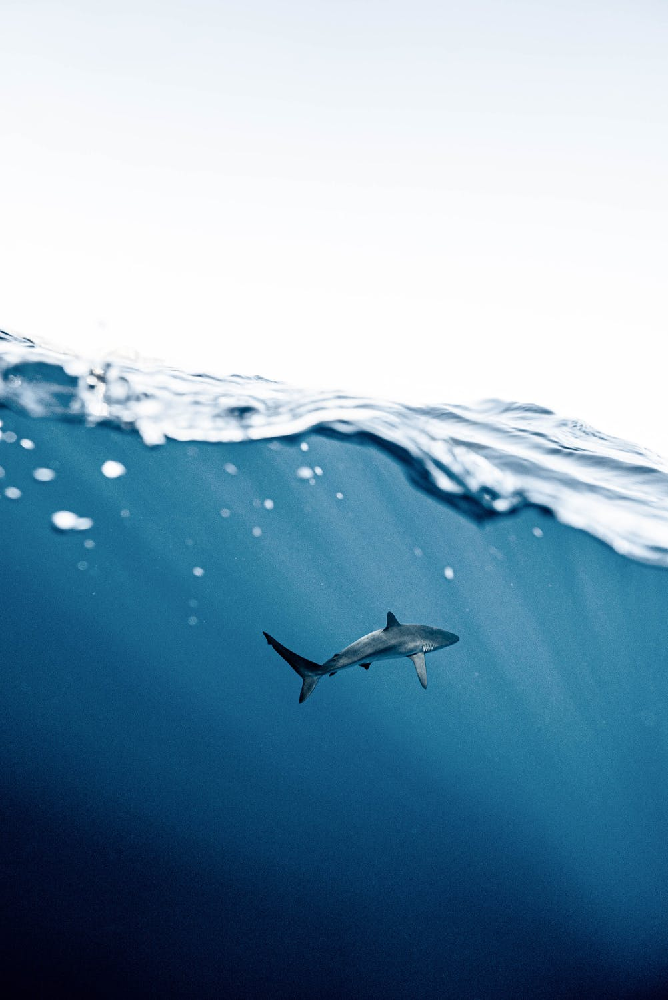

Conservation of Sharks
Even though you may not know it, sharks around the world are becoming endangered. Sharks are very important to the ocean's ecosystem and they keep the food chain in balance. It may be hard to think of what you can do to help save sharks, but there are amazing groups and organizations that you can read about and you can help save sharks even from your own home! Learn about ways to help save sharks through this Sharksider blog and through this Roatan Divers website!


